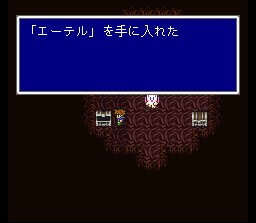
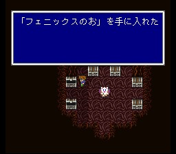
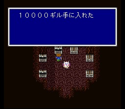
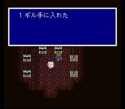
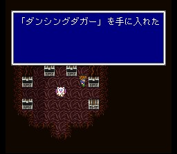
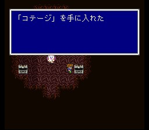
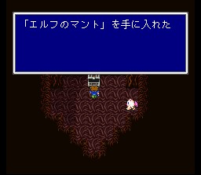

모그리 마을
처음 마을에 도착하면 모그리들은 모두 놀라서 도망다닙니다. 북동쪽 구석에 있는 모그리가 우리가 구해준 모그리로, 그에게 말을 걸면 마을의 아이템들을 가져갈 수 있게 됩니다. 맨 오른쪽 집에 있는 상자만은 잠겨 있는데, 가운데 집에 있는 모그리옷을 입고 오른쪽 집에 있는 모그리에게 말을 걸면 상자를 열 수 있습니다. 쓸 만한 아이템이 몇 개 나옵니다.
아이템을 모두 챙기고 다시 처음의 모그리에게 말을 걸면, 모그리가 쿠루루가 데리고 있는 모그리에게 텔레파시를 보내 일행의 위치를 알립니다. 발 성의 비룡은 마지막 힘을 다해 날고, 쿠루루는 비룡을 타고 일행을 데리러 모그리 마을에 옵니다.